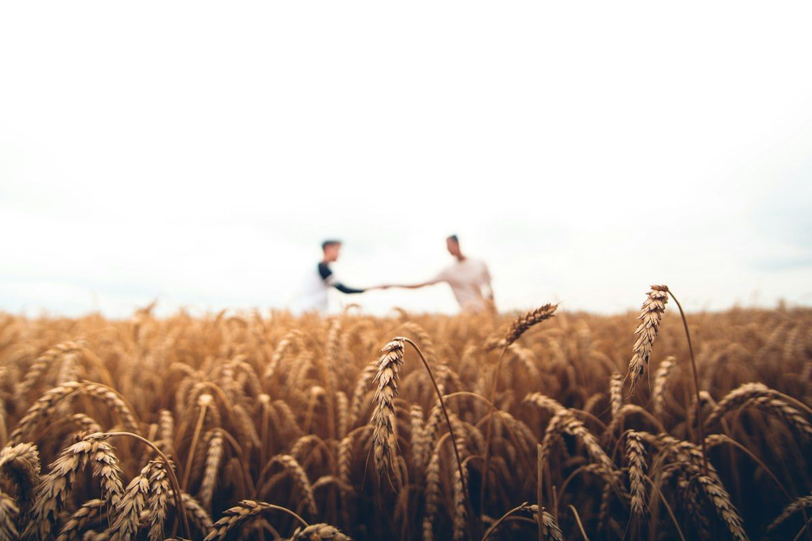
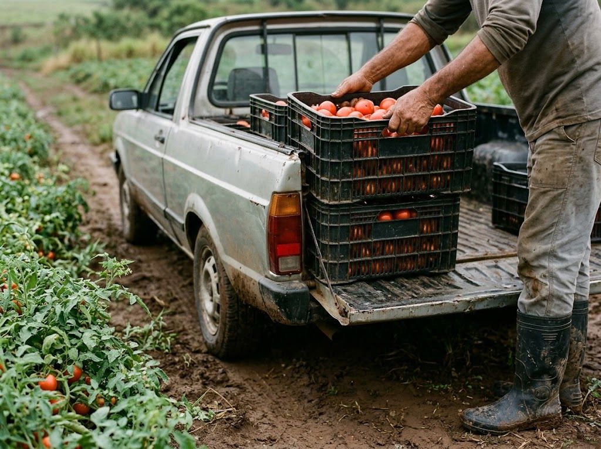

Doação sem taxa
Nenhuma cobrança sobre lotes doados, em etapa nenhuma, para nenhuma das partes. Nenhuma cobrança sobre lotes doados, em etapa nenhuma.

Sobre a AgroTech
Somos uma iniciativa da Brasil A&T. Construímos a plataforma a partir de uma pergunta prática: por que tanto alimento bom se perde a poucos quilômetros de quem precisa dele?
Uma iniciativa da Brasil A&T, construída a partir de uma pergunta prática: por que tanto alimento bom se perde a poucos quilômetros de quem precisa dele?
O pequeno produtor colhe, mas nem sempre consegue escoar. Quando o preço cai ou o frete custa mais que a carga, a safra fica no galpão. Do outro lado da mesma estrada, mercadinhos compram caro de distribuidores grandes e instituições sociais não encontram alimento fresco.
A AgroTech não tenta reinventar o agronegócio. Ela resolve o encontro: mostra, em um raio de poucos quilômetros, quem tem lote disponível hoje e quem precisa dele — para comprar ou para receber como doação.
A AgroTech resolve o encontro: mostra, em um raio de poucos quilômetros, quem tem lote disponível hoje e quem precisa dele.
Evitar que comida boa se perca no caminho entre a roça e a mesa, com tecnologia simples e barata.
Ligar o campo e a cidade de um jeito justo para quem planta, para quem vende e para quem precisa de comida.
Produto, quantidade, prazo de retirada e o destino: venda para comércios ou doação para instituições. Com conta verificada, leva dois minutos. Produto, quantidade, prazo de retirada e o destino: venda ou doação.
O catálogo mostra primeiro o que está mais perto e com prazo mais curto. Doações ficam visíveis apenas para instituições já verificadas. O catálogo mostra primeiro o que está mais perto e com prazo mais curto.
As duas partes conversam pela plataforma, marcam dia e hora no sítio e acertam o pagamento entre si. Não entramos no meio da negociação. As duas partes marcam dia e hora no sítio e acertam o pagamento entre si.

Valor 1 de 4
Nosso compromisso
Fome Zero e Agricultura Sustentável é o objetivo número 2 da ONU, e a gente assumiu ele. Se uma ideia não ajuda nessas duas metas, ela não entra no site.
Quem usa o site sabe de onde vem o nosso dinheiro — e onde ele nunca vai entrar.
Nenhuma cobrança sobre lotes doados, em etapa nenhuma, para nenhuma das partes. Nenhuma cobrança sobre lotes doados, em etapa nenhuma.
Quem planta põe o preço e fica com todo o dinheiro da venda.
Só paga quem quiser aparecer no topo do catálogo. É daí que vem o nosso dinheiro.
Se a sua dúvida não estiver aqui, escreva para a equipe pelo formulário de contato.
O produtor marca o lote como doação na hora de publicar. Instituições já verificadas veem esse lote no mapa, pedem a reserva e combinam a retirada direto com o produtor. A plataforma não cobra nada em nenhuma etapa; a instituição arca apenas com o transporte. O produtor marca o lote como doação. Instituições verificadas veem o lote, pedem a reserva e combinam a retirada direto. A plataforma não cobra nada; a instituição arca apenas com o transporte.
Comércios da região, como mercadinhos, quitandas e feirantes, a até 50 km do produtor. Os lotes de doação ficam disponíveis apenas para instituições sociais verificadas.
Não. Publicar é de graça, a doação não tem taxa e a venda não tem comissão. A plataforma só cobra de quem quiser aparecer em destaque no topo do catálogo.
Quem busca. O comprador ou a instituição combina dia e hora direto com o produtor e cuida do frete. Quando o produtor oferece entrega, isso aparece no anúncio.
A instituição envia o comprovante de CNPJ e informa quantas pessoas atende. Só depois da conferência pela equipe ela passa a ver as doações abertas na região.
Não. As páginas são leves e foram pensadas para o celular. Publicar um lote leva cerca de dois minutos, mesmo com sinal fraco.
Quem vive o campo, o comércio de bairro ou um projeto social enxerga detalhes que não aparecem na mesa de quem desenha. Conte o que faria diferença para você.